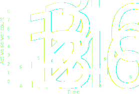

Efficient VM Allocation in Virtualized Data Centers
Andreas Wolke
Average CPU utilziation in data centers
Image source: Barroso, L. A., & Hölzle, U. (2007). The Case for Energy-Proportional Computing. Computer, 40(12), 33‐37. doi:10.1109/MC.2007.443
Current avg. CPU utilization
~ 35%
Target avg. CPU utilization
~ 85%
Leveraging static and dynamic controllers

Data center energy efficiency and consolidation are top priorities of data center managers worldwide!
(Uptime Institute - Top 10 Data Center Technology Priorities for 2013), (2010 - 2013: NASCIO's Top 10 Priorities for State CIOs)Controllers considered
Static Controllers
- Round-Robin
- Vector-Packing
- Integer programming
Dynamic Controllers
- Reactive
- Proactive
Experimental infrastructure

Performance metrics considered
-
Average server demand
Weighted arithmetic mean -
Service quality
% of successful application requests -
Migrations
# of triggered VM live-migratinos

Static consolidation often outperforms dynamic consolidation
Static consolidation
- No VM migrations
- Robust against workload deviations
- Overbooking is sometimes good
- Consolidate in batches
- Vector packing
Dynamic controllers
- Good for unknown workload
- Require buffer capacity
- Migrations are bad
- Proactive controllers are better
What about dynamic scenarios

Placement controllers should be combined with dynamic controllers
and should opt for a dense VM allocation
Placement
- Establish dense allocations
- Simple heuristics are sufficient
- Combine with dynamic controllers
Dynamic controllers
- Increase allocation density
- Negligible effects on service quality
- Migration count depends on placement controller
Average experimental results
| Controller | Pla. | Dyn. |  |
|||
|---|---|---|---|---|---|---|
| D/FF/KM | aggresive | yes | 2.40 | 0.24 | 7.60 | 1.68 |
| D/L2/KM | aggressive | yes | 2.66 | 0.37 | 6.07 | 1.53 |
| R/WF/TC | conservative | yes | 2.79 | 0.31 | 26.42 | 2.25 |
| D/WF/-- | aggresive | no | 3.20 | 0.34 | 0.00 | 0.00 |
| R/WF/KM | conservative | yes | 3.54 | 0.38 | 19.59 | 2.43 |
SD = Server Demand
MG = VM Migrations
MG = VM Migrations
Simulation results (average server demand)
Publications part 1
- A. Wolke, M. Bichler, and S. Thomas, “Planning vs. dynamic control: Resource allocation in corporate clouds,” Accepted at IEEE Transactions on Cloud Computing, 2014.
- A. Wolke and L. Ziegler, “Evaluating dynamic resource allocation strategies in virtualized data centers,” in Cloud Computing (CLOUD), 2014 IEEE 7th International Conference on, 2014.
- A. Wolke and C. Pfeiffer, “Improving enterprise VM consolidation with high-dimensional load profiles,” in Cloud Engineering (IC2E), 2014 IEEE International Conference on, 2014.
- M. Seibold, A. Wolke, M. Albutiu, M. Bichler, A. Kemper, and T. Setzer, “Efficient Deployment of Main-Memory DBMS in Virtualized Data Centers,” in Cloud Computing (CLOUD), 2012 IEEE 5th International Conference on, 2012, pp. 311–318.
- T. Setzer and A. Wolke, “Virtual machine re-assignment considering migration overhead,” in Network Operations and Management Symposium (NOMS), 2012 IEEE, 2012, pp. 631–634.
Publications part 2
- A. Wolke, T.-A. Boldbaatar, C. Pfeiffer, and M. Bichler, “More than bin packing: A large-scale experiment on dynamic resource allocation in IaaS clouds,” Under Rev. at Information Systems, 2015.
Other
- A. Wolke and D. Srivastav, “Monitoring and Controlling Research Experiments in Cloud Testbeds,” in 2013 IEEE Sixth International Conference on Cloud Computing, 2013, pp. 962–963.
- J. Kroß and A. Wolke, “Cloudburst - simulating workload for IaaS clouds,” in Cloud Computing (CLOUD), 2014 IEEE 7th International Conference on, 2014.